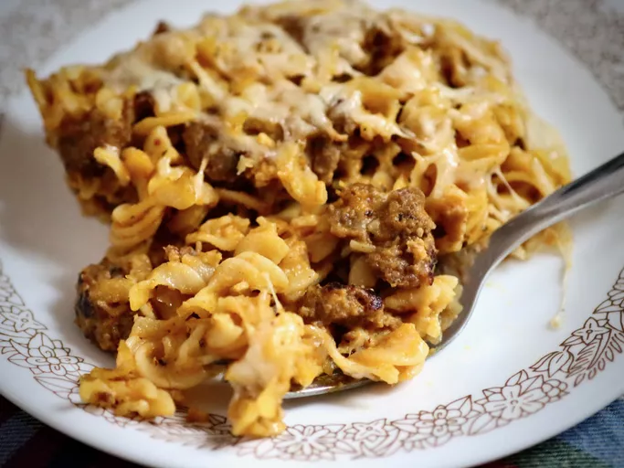

Home
Creamy Pumpkin Pasta Bake

Description
This is a delicious pasta casserole that my boss's wife cooked and sent with him for us all to share. It is really creamy and delicious! It does not taste at all like pumpkin!
Ingredients
- 1 Pound Rotini Pasta
- 1 Pound Sweet Italian Sausage
- 2 Tablespoons Olive Oil
- 1 Cup Diced Onion
- 1 Tablespoon Minced Garlic
- 1 Teaspoon Red Pepper Flakes
- 2 & 1/2 Cups Chicken Broth
- 15 Ounce Can Pumpkin Puree
- 2 Tablespoons Crumbled Cooked Bacon
- 2 Teaspoons Italian Seasoning
- 1 Teaspoon Salt
- 1 Cup Heavy Whipping Cream
- 1 Cup Grated Parmesan Cheese
Steps
- Preheat oven to 375 degrees F (190 degrees C). Grease a 9x13-inch baking dish.
- Bring a large pot of lightly salted water to a boil; cook the rotini at a boil until tender yet firm to the bite, about 8 minutes; drain.
- Cook and stir sausage in a skillet over medium heat until browned and crumbly, 5 to 10 minutes. Drain sausage on paper towels and reserve 2 tablespoons grease in the skillet. Add oil to grease in the skillet; cook and stir onion, garlic, and red pepper flakes in the hot oil-grease until onion is soft, about 3 minutes.
- Stir chicken broth, pumpkin, bacon, Italian seasoning, and salt into onion mixture; bring to a boil. Lower heat and simmer for 5 minutes. Stir cream and sausage into broth mixture and simmer until creamy and thickened, about 5 minutes. Add rotini and gently toss. Transfer mixture to the prepared baking dish and top with Parmesan cheese.
- Bake in the preheated oven until bubbling and golden brown, about 35 minutes.